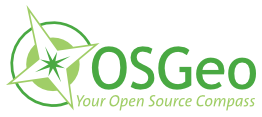
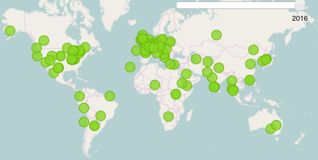

Geo for all
OSGeo education and research outreach:
How it works and how to join
Helena Mitasova
May 2016
Who we are
Global network of academic research and education laboratories and government/industry partners

What is our mission
Making geospatial education and opportunities accessible to all
How it started
Founded in 2011: MoU between OSGeo and the International Cartographic Association (ICA)


 
Georg Gartner and Arnulf Christl, renewal in 2015 with Jeff McKenna
More MoUs coming
International Society for Photogrammetry and Remote Sensing (ISPRS) MoU signed in 2014.


Georg Gartner, Jeff McKenna and Chen Jun
University Consortium for GIScience (UCGIS) to be signed in 2016
Map of the labs
10 labs in 2012

Map of the labs
over 100 labs globaly in 2016

Organization
- global chair: Suchith Anand
- regional chairs for each continent:
contact persons for new members
- advisory board: OSGeo, ICA, ISPRS presidents,
and academic leaders
- 100+ lab directors
Regional chairs
MAP with names
What we do
Collaborate on reserach and education projects
- develop/contribute to open geospatial software, data
- organize/participate at community sprints
- develop open access shared educational material
based on FOSS4G
(not limited to OSGeo projects):
- Geoacademy
- OSGeo Educational Content Inventory www.osgeo.org/educational_content
What we do
Webinars LINK,
Interested to present? Contact Rafael Moreno
image from webinar
What we do
- mentor students (serve on grad committees, ...)
- organize academic sessions at FOSS4G
- organize or contribute to open geospatial sessions
at major conferences (ISPRS, AGU, EGU, ...)
Current activities
- Newsletter
- thematic initiatives: smart cities, agri, education
- NASA World-Wind Europa challenge
image from nasa WW challenge
Current activities
- ICA, ISPRS and OSGeo awards for student contributions at FOSS4G conferences
- Google Summer of Code: 22 students in 2016
- United Nations geospatial committee
image from GSOC - animation
Geospatial FOSS at NCSU
NCSU OSGeo Research and Education Laboratory:
https://geospatial.ncsu.edu/osgeorel
- course development using Geospatial FOSS
- research projects
- active participation in OSGeo projects
Course material on-line
- Freely and openly available online
geospatial.ncsu.edu/osgeorel
- Managed in Git (GitHub hosted) for revision control, collaboration and sharing
- Format: HTML/HTML5,
- License: CC BY-SA
- registered in OSGeo Educational Content Inventory
Examples of collaborations
between labs (small and big, research projects, osgeo projects, education)
between labs and partners
Where to find more info
Website http://www.geoforall.org
Mailing lists: Global and regional
Where to find member labs
Wiki http://wiki.osgeo.org/wiki/Edu_current_initiatives
- member table with links to labs
- Newsletter: lab of the month
- education and research topics
- thematic initiatives
How to participate
Three types of participation:
- members of the global network: academic labs
- partners from industry/government/nonprofit partner
- international professional organizations through MoUs
How to join
http://www.geoforall.org/how_to_join/
- read the criteria
- if you fulfill the criteria, contact a regional chair, describe your
open source geospatial activities
- if invited:
- create entry for your lab in the wiki table
- join the mailing list
- list your research and edu interests
- participate - see http://wiki.osgeo.org/wiki/Geoforall_criteria
What are the benefits of joining Geo for All?
You are asking the wrong question, your should ask
How can I contribute?